Outubro 2026
Statement
Posicionamento, marca e peças
Zoom out: a Stap e o mercado.
Antes de mexer em qualquer peça, voltamos um passo: olhamos para a gente e para o mercado. O posicionamento é uma consequência disso.
01
A Stap hoje.
Onde a marca aparece hoje: site, apresentação comercial e Instagram.
O site chegou ao limite da plataforma.
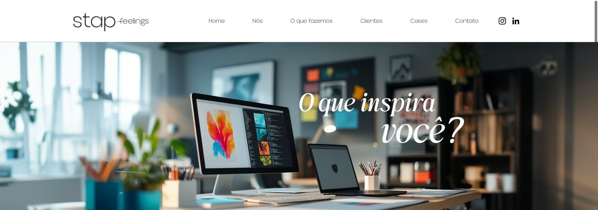
A plataforma
Feito no Wix, com banners e imagens dentro do que a ferramenta permite. Pouco espaço para mostrar projeto.
O discurso
“Transformamos design em emoção”: a mesma promessa do mercado.
O que o próximo precisa
Cases com o render aprovado ao lado do montado, e Agro e Auto em destaque.
stap.com.br · primeira tela · 28/out/2026
A apresentação comercial não sai do computador.
4 GB
Pesada demais para mandar por e-mail ou WhatsApp.
+100
slides, extensa e repetitiva.
Lenta
para abrir e para navegar na frente do cliente.
O Instagram não é ruim. Falta constância.
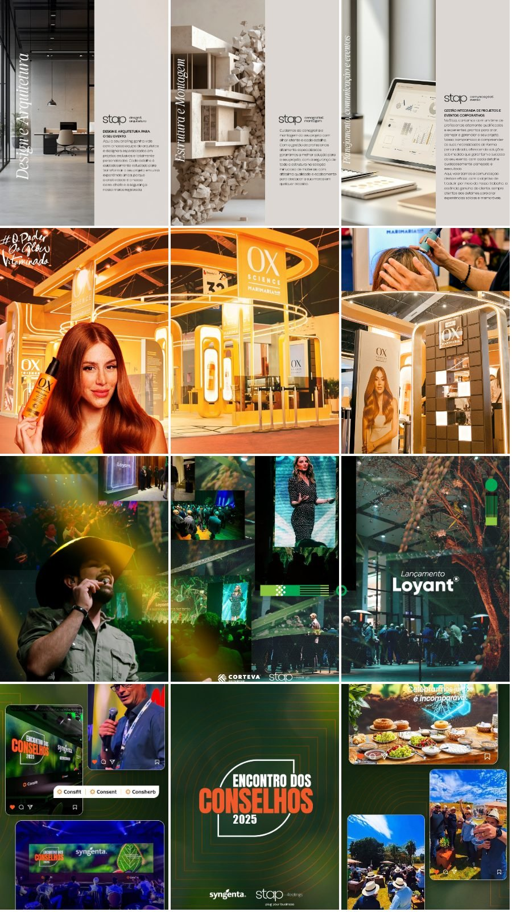
O que funciona
Os KVs dos eventos dos clientes fazem do feed um portfólio bonito.
Ritmo
47 posts no total. O último é de 20/fev/2026.
Formato
Os posts saem em trincas, três no mesmo dia, para montar o mosaico do feed. Entre um bloco e outro, meses sem nada.
O que falta
Uma linha editorial com frequência: processo, bastidores e render × real.
@stapfeelings · últimos 12 posts · 28/out/2026
02
O mercado.
Oito agências lidas nas próprias fontes: o que dizem, o que mostram e com que constância aparecem nas redes.
Oito sites, quase a mesma promessa.

TM1

Netza

Hype

Innova AATB

Grupo Speed

BFerraz · referência

Red Door · referência

Rock · referência
Primeira tela de cada site · 18/out/2026
Todos prometem a mesma emoção.
O que todo mundo diz não diferencia ninguém. E a Stap também falava assim.
No Instagram, o evento pronto. E quem posta muito, posta escala.
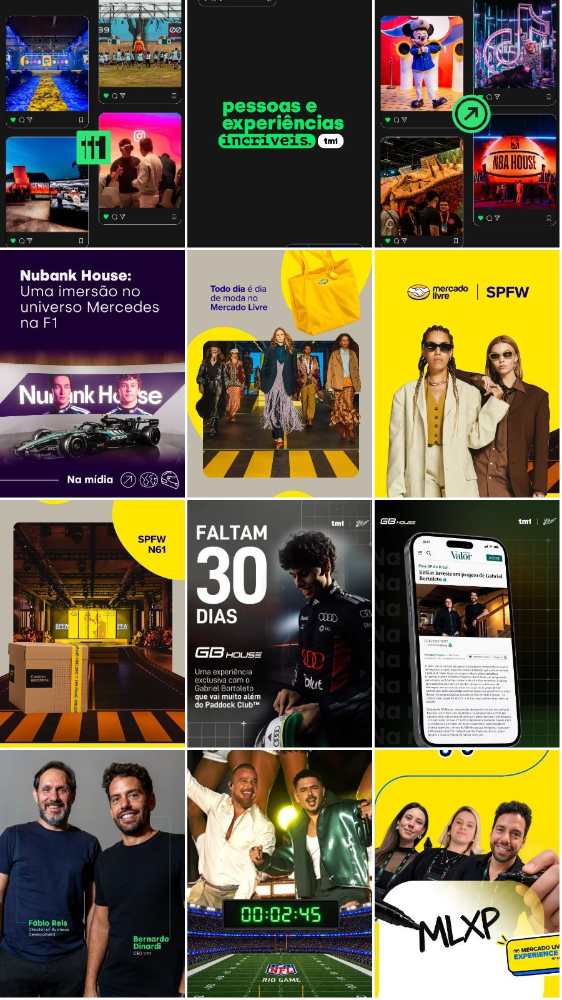
1.227 posts
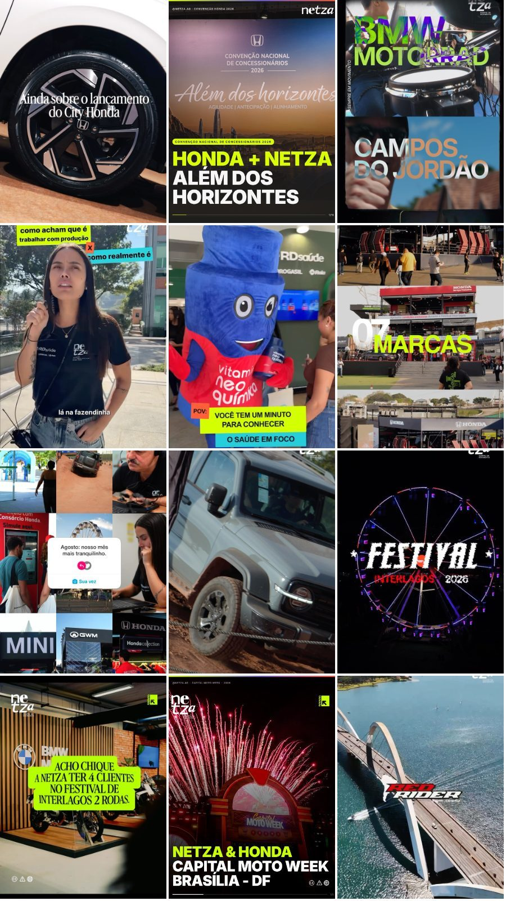
1.411 posts
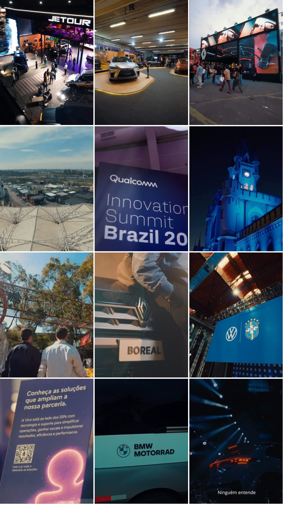
181 posts
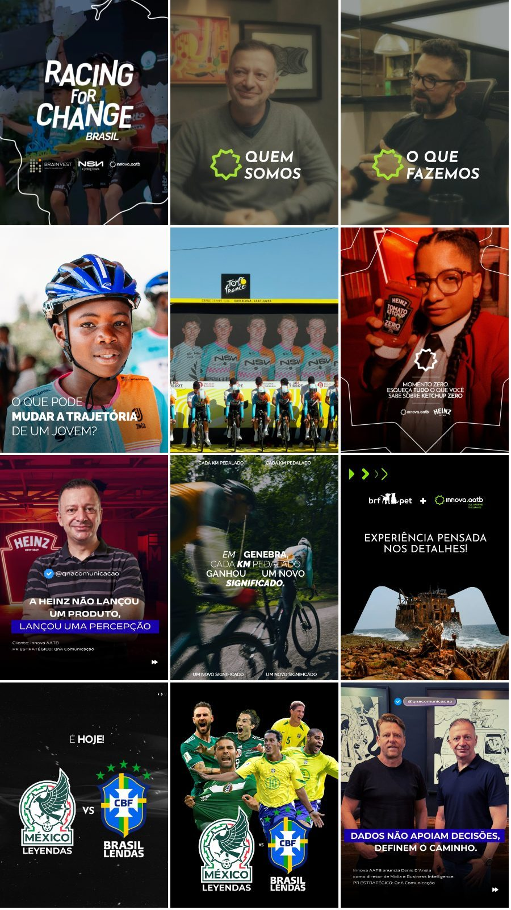
291 posts
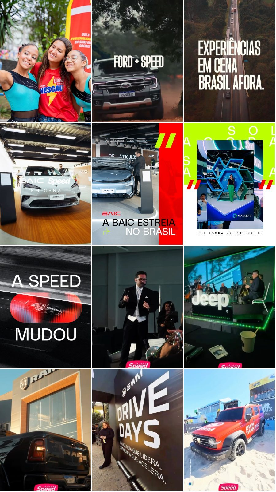
45 posts
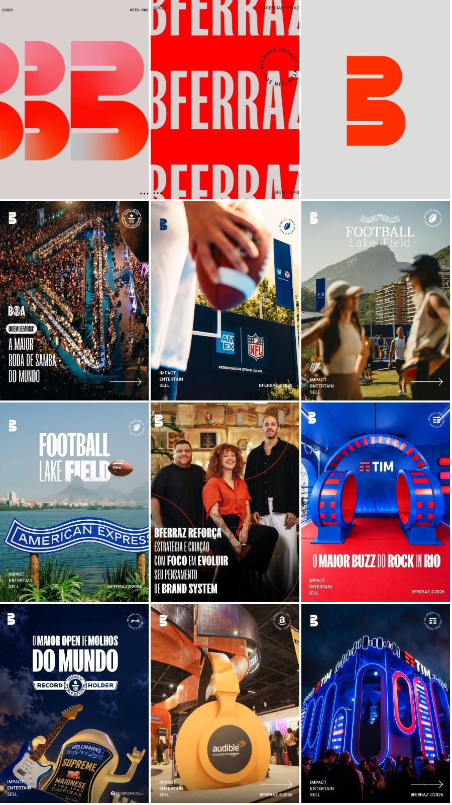
328 posts
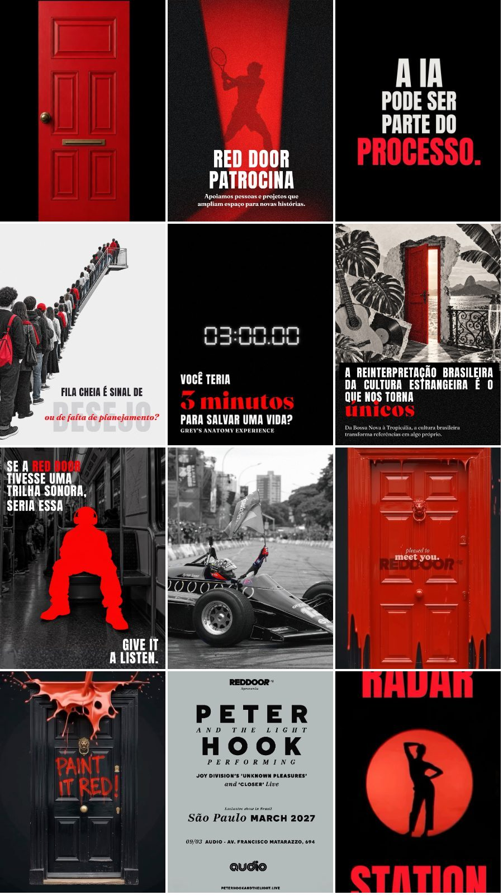
448 posts
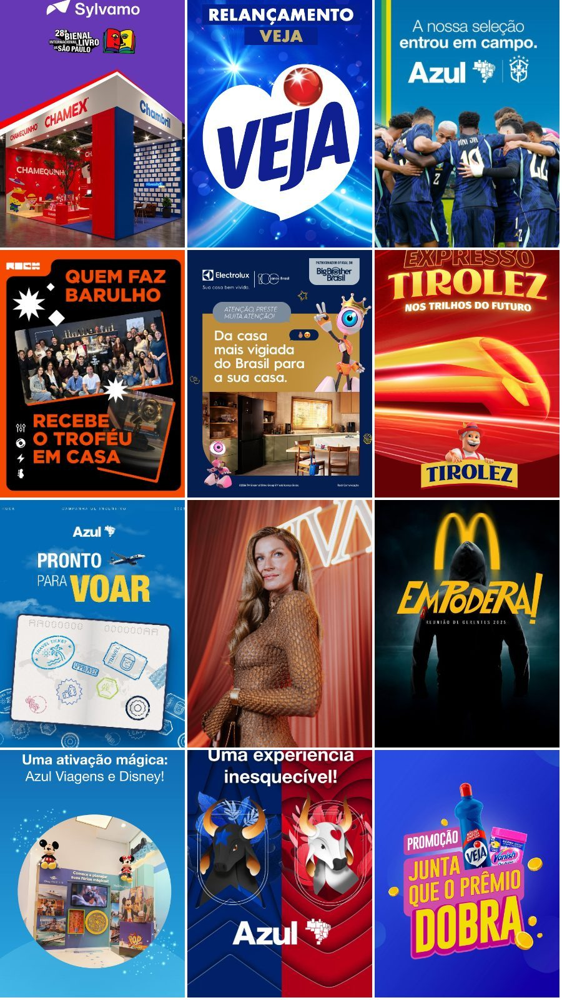
401 posts
Últimos 12 posts e total de posts de cada perfil · 27/out/2026 · @stapfeelings: 47 posts
O que os oito mostram de fato.
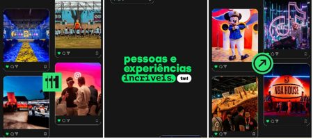
TM1Vários setoresColorido✓—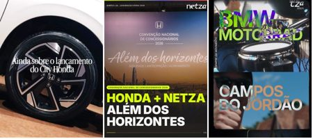
NetzaVários, com Auto forteMisto✓Bastidores de equipe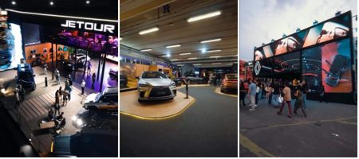
HypeVários, com AutoEscuro✓—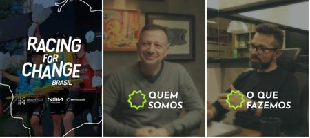
Innova AATBVários setoresEscuro✓—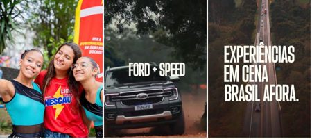
Grupo SpeedFoco em AutoMisto✓—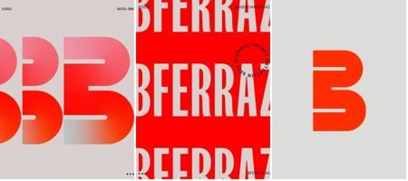
BFerrazVários setoresCor da marca✓—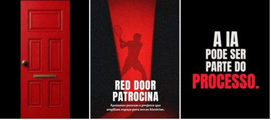
Red DoorVários setoresEscuro✓—Evento pronto 8 de 8 · Como foi construído 0 de 8 · Foco setorial 1 de 8 · sites e últimos 12 posts, out/2026

Grupo Speed · GWM na Agrishow
O concorrente mais direto não mostra o que construiu.
1
foto
0
números
0
render ou processo
“A imagem do projeto apresenta um veículo em uma estrutura de pista elevada.” O texto do case descreve a própria foto.
speedsports.com.br/projetos/gwm-agrishow · capturado em 26/out/2026
Quem prova é generalista. Quem é especialista só emociona.
→ Horizontal: do discurso de emoção à prova (cases com números, resultado).
↑ Vertical: de quem atende qualquer setor a quem tem especialidade por setor.
A Stap já é especialista: hubs de Agro e de Auto, 34 anos de carteira. Mas fala de emoção como todas.
Especialista em Agro e Auto que prova a entrega: esse canto está vazio.
● Stap
Agro e Auto, com prova
Netza, Innova e Red Door provam escala e resultado · out/2026
Até aqui, a linguagem de hoje.
Daqui em diante, a linguagem nova.
Agora, a Stap muda de casca.
Agora, a Stap muda de casca.
Como chegamos lá
Para ocupar o canto da prova, a Stap muda por dentro e por fora.
O que dizemos
Posicionamento e statement. Da emoção prometida para a emoção construída e provada.
Como dizemos
Tom de voz. Fato e emoção na mesma frase; prova no lugar do adjetivo.
Como aparecemos
Identidade visual. Uma casca à altura do que a Stap entrega.
Como a Stap chega lá?
O que ouvimos
O mercado vende emoção.
O cliente compra segurança.
“Os clientes escolhem a Stap pela criatividade e pela segurança de entrega.”
Criatividade abre a porta. Segurança fecha o contrato. E quem decide, muitas vezes, é o departamento de compras.
03
O statement.
O insight que saiu do estudo, a frase e a plataforma que ela organiza.
A crença diz por quê. A prova mostra como.
A crença
“Você não é o que você faz. Você é o que você faz as pessoas sentirem.”
A alma do feelings. Sozinha, vira poesia: qualquer agência poderia dizer.
A prova
O render aprovado ao lado do projeto montado. Em Agro e em Auto.
Ter criação, arquitetura e produção juntas, outras agências também dizem. O que ninguém faz é mostrar que o aprovado virou o entregue. E a Stap pode mostrar isso onde é especialista.
A essência fica. Muda o que a gente afirma.
Antes · posicionamento
Three visions, one feeling.
Continua como crença: é por que a Stap faz o que faz.
→
Agora · posicionamento
Sentimentos se constroem.
Vira o que a Stap afirma e prova: do render ao real.
Manifesto
Sentimentos
se constroem.
Sentimentos
se constroem.
Do render ao real: criação, arquitetura e produção integradas, do projeto à montagem.
Do renderao real.
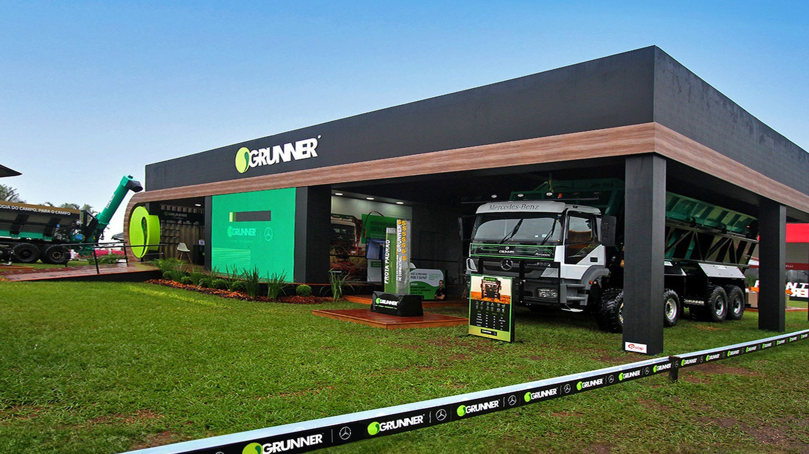
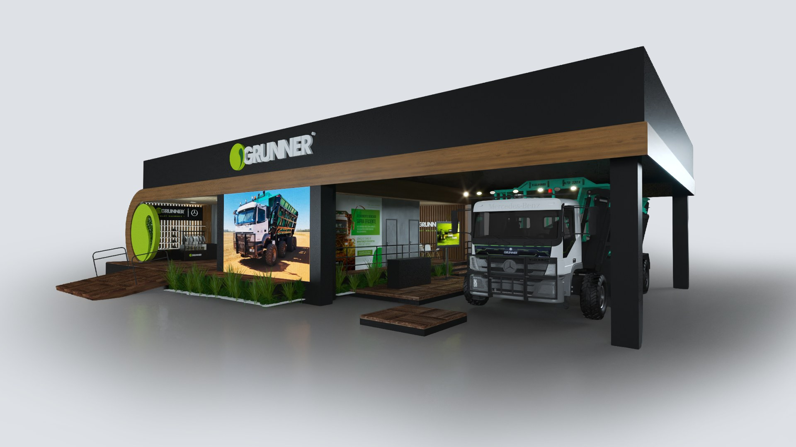
RenderReal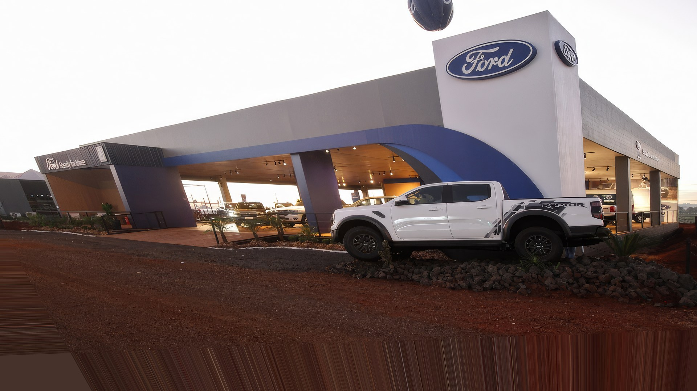
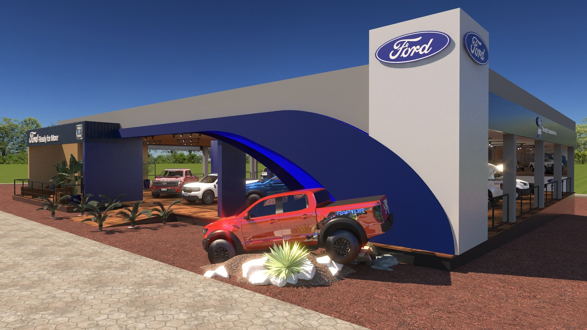
RenderRealGrunner · avance para a Ford · arraste o traço
04
A marca.
Um statement novo pede uma voz à altura.
Uma frase com mais força pede uma marca com mais voz.
Presença
Reconhecível de longe: numa feira, num feed, na capa de uma proposta.
Voz
A assinatura fala com a mesma voz do statement: emoção com firmeza.
Atitude
Mais bold, mais editorial, mais argumento. A marca deixa de ser só um selo.
Fica o nome. Ganha voz.
Até 2026
2026
Fica: o nome, o feelings e o navy. Quem conhece a Stap reconhece.
Muda: o Stap ganha desenho próprio, com presença; o feelings vai para caixa-alta espaçada.
05
O sistema.
Tipografia, cor, degradês e um elemento próprio.
Três vozes. A serifa lidera.
Emoção
Aaa
Instrument Serif · regular e itálica
ABCDEFGHIJKLMNOPQRSTUVWXYZ
abcdefghijklmnopqrstuvwxyz 0123456789
Statement, títulos e frases. A palavra-sentimento em itálico azul.
Impacto
Aa
Tusker Grotesk 3500 Medium
ABCDEFGHIJKLMNOPQRSTUVWXYZ
0123456789 +4.000
Caixa-alta, poucas palavras: números de prova e nomes de cliente.
Leitura
Aa
PPR Text · regular
ABCDEFGHIJKLMNOPQRSTUVWXYZ
abcdefghijklmnopqrstuvwxyz
0123456789
Texto corrido, legendas e etiquetas espaçadas.
Clara e fria, num mercado escuro e quente.
A cor forte de cada peça é a do cliente, nas fotos. A Stap fica clara em volta: base off-white, azuis como luz, navy em momentos pontuais. Terrosos de apoio vêm dos materiais dos próprios projetos.
Degradês: luz, não decoração.
Essenciais · só azuis | Atmosferas · com terrosos
Entram em aberturas, títulos de impacto, motion e posts. Nunca no logo, atrás de texto corrido ou sobre a cor do cliente.
O statement vai para a rua
Sentimentos
se constroem.
Stap · desde 1992